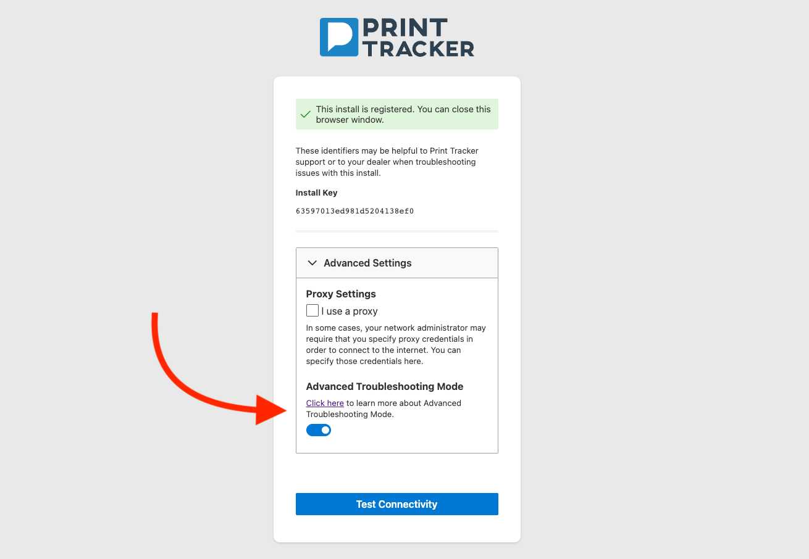

Advanced Troubleshooting Mode
Warning
Advanced Troubleshooting Mode is disabled by default and can only be enabled by someone with physical access to the Print Tracker data collection agent.
This mode allows designated Print Tracker engineers to connect directly to a printing device by creating a temporary virtual private network between Print Tracker engineers and the printing device. This technology is powered by Tailscale which enables private, secure connections between Print Tracker and the printing device using an industry-standard technology called Wireguard. These temporary connections are only created between Print Tracker engineers and the printing device, other devices on customer networks are not exposed; this behavior ensures that Print Tracker engineers access only authorized devices.
Enabling
To turn on Advanced Troubleshooting Mode, make sure you have physical or remote access to the data collection agent.
- Navigate to localhost:1301.
- Click the toggle switch under the Advanced Troubleshooting Mode section.
Info
If the Advanced Troubleshooting Mode option is not shown, it may not be available for your Data Collection Agent yet. Please reach out to support@printtrackerpro.com for additional questions.

Frequently Asked Questions
Why would I need to use Advanced Troubleshooting Mode?
In most cases, you don’t, however, there are some situations that previously required a Zoom/Team Viewer meeting between Print Tracker engineers and someone onsite at the customer location. In these situations, Advanced Troubleshooting Mode may allow Print Tracker to perform these troubleshooting steps remotely rather than requiring a meeting to be scheduled with the end customer. Examples of situations where Advanced Troubleshooting Mode may be required:
- Remote technician is not working for a particular model.
- Print Tracker is not able to connect to a device but the device is on the network.
Advanced Troubleshooting Mode will not help you if:
- The Print Tracker data collection agent is being stopped by antivirus software.
- The computer running the Print Tracker data collection agent does not have internet connectivity.
How is this different then what Print Tracker does normally?
Print Tracker normally makes various types of network requests directly from the agent installed within customer networks to printing devices. Print Tracker engineers have configured Print Tracker to make those requests, but the requests are not made by Print Tracker engineers directly. Advanced Troubleshooting Mode allows Print Tracker engineers to make requests to the printing device directly.
What does this technology allow Print Tracker to do?
This allows Print Tracker engineers to make network requests to printing devices that are managed by Print Tracker remotely through the Print Tracker data collection agent. It does not allow Print Tracker engineers to connect to other devices on your network that are not managed by Print Tracker.
What would happen in the unlikely event that Print Tracker were compromised by an attacker?
We’ve taken several steps to make sure that Advanced Troubleshooting Mode cannot be used in the event that Print Tracker is compromised:
- Connections are only allowed if Advanced Troubleshooting Mode has been enabled directly on the data collection agent by someone with physical access to the Print Tracker data collection agent.
- Tailscale requires that all users of the network are registered as authorized users in our Tailscale account. This account is authorized using Microsoft SSO which requires two-factor authentication.
- Tailscale ACLs ensure that each customer using Advanced Troubleshooting Mode is isolated to their own “virtual network”. This ensures that one compromised customer could not compromise another customer.
- Tailscale ACLs ensure that only specific Print Tracker engineers are authorized to connect to printing devices. These engineers are also authorized using Microsoft SSO.
- It is not possible to initiate a connection from the customer network side and connect to Print Tracker due to the use of a user-space networking stack.
- The virtual network between Print Tracker engineers and printing devices is temporary: it is turned on for the duration of the troubleshooting session and then it is disabled. This ensures that there aren’t any persistent virtual networks that exist into perpetuity.
How do I know if my agent has Advanced Troubleshooting Mode enabled?
Advanced Troubleshooting Mode is disabled by default and can only be enabled by someone with physical access to the Print Tracker data collection agent. You can check whether Advanced Troubleshooting Mode is enabled by navigating to localhost:1301